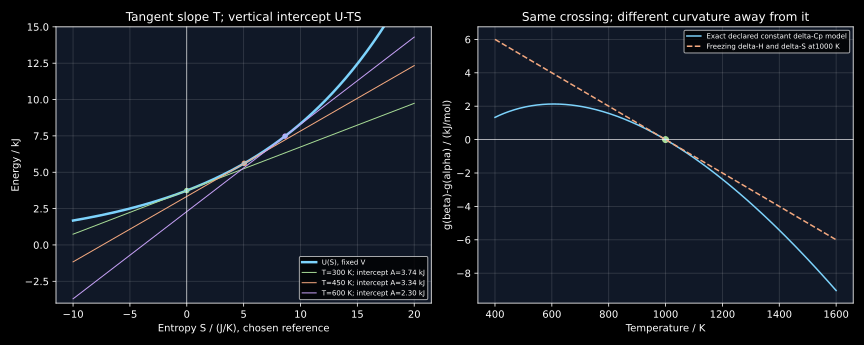

9. Entropy contributions and thermodynamic potentials
A material may become more ordered while releasing enough heat to increase the entropy of its environment. The system's entropy alone therefore cannot decide the direction of a transformation. A thermodynamic potential incorporates a specified environment into an accounting function for the system. The constraints determine the function: Helmholtz energy for fixed temperature and volume, Gibbs energy for fixed temperature and pressure. Their minimization principles require those constraints, conserved amounts and an explicit work convention.
The entire local transcript of lesson 17 was read sequentially. It connects positional counting to Joule expansion, classifies entropy contributions, introduces Legendre transforms through tangent intercepts, and derives a Gibbs-energy criterion. This chapter supplies the missing constraint and state-space distinctions, corrects the rounded small-system counting, and develops original analytic and numerical examples. The gas, oscillator, phase and noise models are declared constructions, not measurements. Raw ASR may misrecognize symbols; the equations below are independently derived.
9.1 What positional counting actually establishes L 17 · 01:28
Discretize a volume into equal position cells of size $a^3$. For $N$ independent classical particles with no excluded-volume constraints, the position factor in a state count is proportional to $(V/a^3)^N$. This is a dilute ideal-gas construction, not a lattice model of dense atoms. An identical choice of cells at two volumes gives
The arbitrary cell scale cancels from this difference. A consistent classical phase-space measure also includes momentum cells and, for indistinguishable particles, the same $1/N!$ factor. At the same $N$ and temperature these factors cancel from the ideal-gas volume ratio. Their cancellation does not justify discarding them when comparing different particle numbers, calculating absolute entropies or studying quantum-degenerate gases. The cell construction explains a particular entropy change; it does not set the absolute entropy reference.
For ideal-gas Joule expansion in an isolated rigid outer container, the equilibrium endpoints have equal internal energy and temperature. The equilibrium momentum distribution is unchanged. Individual atoms still move and collide; it would be incorrect to infer that every particle's momentum is constant throughout relaxation. Doubling the available volume gives $nR\ln2$, matching the reversible-reference calculation in chapter 8. The actual isolated process exchanges no heat and generates this entropy.
A second important boundary is identical-particle mixing. Remove a partition between equal-temperature, equal-pressure portions of the same ideal gas. No new distinguishable species concentration has been randomized, so the thermodynamic mixing entropy is zero. Labeling the particles by the side on which they started and then retaining those labels as if they identified different substances artificially counts extra states. In contrast, distinguishable chemical species can have a mixing entropy. Consistent counting must respect the physical distinctions accessible in the model.
9.2 Entropy labels describe a state model, not separate substances L 17 · 09:40
The recording lists positional, chemical configurational, vibrational, electronic, magnetic, translational and rotational contributions. These names identify degrees of freedom being counted. Chemical configurational entropy concerns arrangements of species over sites; positional configurational entropy can concern distinct structures or basins of an amorphous material. Vibrational entropy concerns populations of vibrational states within a structure. Electronic and magnetic terms concern electronic occupations and moment configurations. Translational and rotational terms matter for gases. “Thermal entropy” is useful descriptive grouping, not a universally unique decomposition.
The mathematical condition for straightforward addition is factorization. If two independent sectors have multiplicities $\Omega_1$ and $\Omega_2$, then $\Omega=\Omega_1\Omega_2$ and $S=S_1+S_2$. With unequal probabilities, use the ensemble entropy $S=-k_B\sum_i p_i\ln p_i$. For a joint distribution $p_{ab}=p_a p_b$, insert the product in the logarithm and sum over both indices; again the two marginal entropies add. When the sectors are correlated,
One elementary proof of the inequality uses $\ln x\le x-1$ on $x=p_a p_b/p_{ab}$, sums over states with nonzero joint probability, and uses normalization; missing joint-support terms only strengthen the bound. Thus adding marginal entropies can double-count correlated uncertainty. For equally probable states $00$ and $11$, both binary marginals have entropy $k_B\ln2$, but the pair has only two possibilities, giving joint entropy $k_B\ln2$ and mutual information $\ln2$. This is an ensemble example, not a measurement of a material's correlation entropy.
A more faithful basin decomposition uses conditional probabilities. Let $b$ identify a structural basin and $r$ a state within it, with $p_{br}=P_b p(r|b)$. Expanding the logarithm gives the exact identity
The first term describes basin populations; the second is an average of entropy within basins. No independence of basin and vibration is assumed. Different basins may have different frequencies and entropies, so treating a single vibrational contribution as common to all configurations requires an additional approximation. Chemical arrangements, local volumes and vibrational spectra can be coupled. Nor does merely counting arbitrary categories establish thermodynamic entropy: an ensemble, state measure and physical constraints must connect those categories to accessible material states.
For the recording's four-mode example, $q$ indistinguishable energy quanta distributed among four labeled independent modes have $\Omega(q)=\binom{q+3}{3}$. Initial allocations $5+1$ between two groups have multiplicity $56\times4=224$; allocation $3+3$ has $20^2=400$. The hot-group change is $k_B\ln(20/56)=-1.029619417k_B$, the cold-group change is $k_B\ln5=1.609437912k_B$, and the total is $0.579818495k_B$. The approximate $0.7k_B$ in the spoken sketch is not the exact result. This tiny model gives relative macrostate weights, not a deterministic trajectory that must reach the modal split.
Vibrational entropy can also be derived from the canonical oscillator used in chapter 6. For excitation energies $j k_B\Theta$, $j=0,1,\ldots$, set $x=\Theta/T$ and sum the geometric series $Z=(1-e^{-x})^{-1}$. Then $p_j=e^{-jx}/Z$, $\langle j\rangle=(e^x-1)^{-1}$, and direct substitution into the ensemble entropy gives
A uniform zero-point shift changes the energies and free energy by the same constant but leaves normalized probabilities and entropy unchanged. At $x=2$, the result is $0.458448743k_B$ per mode. As $T\to0$ for a nondegenerate oscillator, it tends to zero. This expression does not imply that all solids have identical frequencies or that every entropy contribution vanishes in every frozen nonequilibrium material.
9.3 The fundamental relation is an identity between equilibrium states L 17 · 20:20
Consider a simple compressible equilibrium system with fixed amounts of all chemical species, no fields or nonhydrostatic strain variables, and no macroscopic kinetic or gravitational energy change. Its fundamental relation is $U=U(S,V,\{n_i\})$. At fixed species amounts, a reversible reference displacement has $\delta Q_{\rm rev}=T\,dS$ and reversible pressure work $p\,dV$. The first law then identifies the derivatives
This differential is an equilibrium state identity. A reversible reference path helps derive it; an actual process connecting the same equilibrium endpoints need not be reversible. During a far-from-equilibrium transient, one cannot necessarily assign a single system temperature, pressure or equilibrium entropy at each instant. Still, endpoint differences can be calculated with the equilibrium relation. The statement in the recording that the combined relation applies “only” to reversible processes needs this distinction: the equalities $\delta Q=T\,dS$ and actual work $\delta W=p\,dV$ require reversibility, whereas the fundamental state identity has wider endpoint utility.
The $S$ in this relation is the entropy of the system whose $U$ is being differentiated. It does not denote the entropy of system plus surroundings. When species amounts change, add $\sum_i\mu_i\,dn_i$; internal variables, surface area, elastic deformation and electromagnetic degrees of freedom can add other conjugate terms. Suppressing these terms is a stated model restriction, not an assertion that they never exist in materials.
An explicit one-mole ideal-gas model makes the identity testable. Let $C=3R/2$, choose reference values $T_*=300$ K and $V_*=0.025$ m³, and set the entropy reference so
Differentiating gives $U_S=U/C=T$ and $-U_V=(R/C)U/V=RT/V$. The reference shifts the numerical entropy origin but leaves entropy differences and measured derivatives intact. At $T=450$ K and $V=0.040$ m³, $S=8.964664332$ J/K and $p=93537.704456$ Pa. The program checks both derivatives numerically against these analytic expressions.
9.4 Exchanging natural variables without losing the product rule L 17 · 24:10
At fixed volume, a tangent to $U(S)$ at $S_0$ has equation $y=U(S_0)+T(S_0)(S-S_0)$. Its slope is $T$ and its vertical intercept is $U-TS$. Labeling the same family of tangents by slope instead of contact entropy produces the Helmholtz energy $A(T,V)=U-TS$. The intercept is not generally zero, and $U$ is not generally equal to $TS$.
For a stable smooth branch with positive heat capacity, $U_{SS}=(\partial T/\partial S)_V=T/C_V>0$, so temperature locally labels the entropy uniquely. At coexistence or a nonstrictly convex region this inverse can cease to be unique; the equilibrium potential is still obtained by the appropriate constrained minimization or convex construction. A tangent picture alone should not assume global invertibility across phase transitions.
The derivative of $TS$ has two terms. Retaining only $T\,dS$ would incorrectly leave temperature absent from the transformed natural variables. Pressure is conjugate to volume with a minus sign in $dU$, so exchanging volume for pressure adds $pV$ rather than subtracting it. Applying the same product rule gives
| Potential | Natural variables at fixed species amounts | Derivative information |
|---|---|---|
| $U$ | $S,V$ | $U_S=T$, $U_V=-p$ |
| $H$ | $S,p$ | $H_S=T$, $H_p=V$ |
| $A$ | $T,V$ | $A_T=-S$, $A_V=-p$ |
| $G$ | $T,p$ | $G_T=-S$, $G_p=V$ |
Fixed species amounts are understood in every derivative in the table. Natural variables are coordinates with especially useful coefficients, not the only coordinates in which a state function can be expressed. One can write an ideal gas's $U$ as a function of $T,V$, but that does not make the coefficient of $dT$ in the fundamental relation equal to entropy.
Equality of mixed derivatives gives a check independent of the energy zero. From a smooth $G(T,p)$, $-(\partial S/\partial p)_T=(\partial V/\partial T)_p$. The ideal gas has $(\partial S/\partial p)_T=-R/p$ and $(\partial V/\partial T)_p=R/p$, consistent with the sign. Similarly, $C_p=T(\partial S/\partial T)_p=-T G_{TT}$: positive heat capacity corresponds to concavity of $G$ in temperature, even while equilibrium minimizes $G$ over allowed internal states. These are different directions in state space.

9.5 Derive the environment-dependent decrease criterion L 17 · 32:54
Let a closed system interact with one ideal thermal reservoir at fixed $T_0>0$ and a constant external mechanical pressure $p_0$. Let $W_u$ be useful work delivered to an ideal work store, excluding the $p_0\Delta V$ displacement work. Take heat into the system as positive. Neglect energy changes outside the thermal reservoir, pressure-work store and useful-work store; these ideal work stores carry no entropy. The first law and reservoir entropy balance are
Define an environment-referenced function $\Phi=U+p_0V-T_0S$. Eliminating the actual heat gives
For no useful-work exchange, $\Phi$ cannot increase. If both equilibrium endpoints have system temperature $T_0$ and pressure $p_0$, then their $\Phi$ values equal their Gibbs energies, giving $\Delta G=-T_0\Delta S_{\rm total}\le0$. If a hot body initially differs from $T_0$, use $\Phi$ instead of silently substituting its own $G=U+pV-TS$. The environment parameters in $\Phi$ are fixed throughout; the system's temperature need not equal them at the initial endpoint.
Under fixed $T_0,V$, the same argument removes pressure displacement and gives $\Delta(U-T_0S)=-W_u-T_0\Delta S_{\rm total}$. At isothermal endpoints this is the Helmholtz criterion. These derivations explain the constraints behind the potential choices listed in MIT's thermodynamic-potential notes. The reservoir being large is insufficient by itself: several temperatures, changing pressures, chemical inflows or electrical work require the corresponding complete balance.
Likewise, $Q=\Delta H$ is not an unconditional definition of enthalpy. At constant boundary pressure, with system endpoint pressures equal to that pressure, and no useful-work exchange, $\Delta H=\Delta U+p_0\Delta V=Q$. With useful work present, $Q=\Delta H+W_u$. Away from these conditions, enthalpy remains a state function but need not equal the heat supplied. For a fixed-temperature transformation with the stated pressure conditions and no useful work, the useful ledger is $\Delta S_{\rm reservoir}=-\Delta H/T_0$ and $\Delta S_{\rm total}=-\Delta G/T_0$.
For a numerical counterexample to using the system's entropy alone, cool one mole of the calorically ideal monatomic gas from 600 K to a 300 K bath while maintaining external pressure 100 kPa. The endpoints match that pressure. With $C_p=5R/2$, $Q=C_p(300-600)=-6235.846964$ J and $\Delta S_{\rm gas}=C_p\ln(300/600)=-14.407865804$ J/K. The reservoir gains $20.786156545$ J/K. Total generation is $6.378290741$ J/K and $\Delta\Phi=-1913.487222$ J. The gas becomes lower in entropy while the complete process obeys the second law. Its initial temperature is not the bath temperature, so this $\Delta\Phi$ is not simply the difference of its endpoint Gibbs energies.
9.6 The missing variable in a fixed-temperature transformation L 17 · 40:58
There appears to be a contradiction: $dG=-S\,dT+V\,dp$ gives zero at fixed $T,p$, yet transformations are driven by decreasing $G$. The abbreviated identity describes a selected equilibrium branch with fixed species amounts and no remaining internal freedom. Transforming states need a larger state space. For example, retain a constrained internal coordinate $\xi$ such as phase amount or degree of order. A constrained-equilibrium description has
At fixed $T,p$, the remaining variation is $X\,d\xi$. For a pure material with two bulk phases and negligible interfacial energy, write $G=n[(1-\xi)g_\alpha+\xi g_\beta]$, $0\le\xi\le1$. Then $X=n(g_\beta-g_\alpha)$. A lower $g_\beta$ favors increasing $\xi$; equality gives a flat direction, so any phase amount can coexist subject to other constraints. Chemical transfers among phases similarly require the $\mu_i^k\,dn_i^k$ terms even though total amounts are conserved.
Minimization does not guarantee rapid motion. A declared constrained model $G(\xi)=B\xi^2(1-\xi)^2$, $B>0$, on $0\le\xi\le1$ has equally low endpoints and a barrier $B/16$ at $\xi=1/2$. The positive second derivative at an interior stationary point is only a local test; a global comparison must consider all admissible states. Interfacial costs, nucleation barriers, diffusion and frozen internal variables explain why a system can remain metastable even if another state has lower Gibbs energy. No kinetic rate follows merely from the sign of a finite $\Delta G$.
9.7 Enthalpy–entropy competition needs temperature dependence L 17 · 41:28
Compare two constrained states at a common temperature and pressure. Then $\Delta G=\Delta H-T\Delta S$ exactly. A negative $\Delta H$ with positive $\Delta S$ favors the second state at positive temperature; the opposite pair opposes it. Equal signs allow a crossover, provided the magnitudes and their temperature dependence are known. The sign test concerns the defined comparison, not every possible reaction, mixture or intermediate state.
For phase differences at fixed pressure, $d\Delta H/dT=\Delta C_p$ and $d\Delta S/dT=\Delta C_p/T$. If $\Delta C_p$ is constant over a declared interval, integration from $T_m$ gives
Choose a synthetic $T_m=1000$ K, $\Delta H_m=10000$ J/mol, $\Delta S_m=10$ J/(mol K) and $\Delta C_p=20$ J/(mol K), restricted to 400–1600 K. The two states tie at 1000 K. At 500 K, $\Delta H=0$, $\Delta S=-3.862943611$ J/(mol K), and $\Delta G=1931.471806$ J/mol. At 1500 K, $\Delta G=-7163.953243$ J/mol. Holding $\Delta H$ and $\Delta S$ fixed at their 1000 K values misses the curvature: $\Delta G''=-\Delta C_p/T$. This restricted construction is not an extrapolation toward absolute zero.
The lecture uses biological organization as an illustration that a subsystem can become ordered. The defensible thermodynamic statement is that a system's entropy may decrease while its surroundings gain more. Visual or sequence order alone does not specify the full entropy of a protein, solvent and reactants. Cells also exchange matter, chemical free energy and heat, so the closed-system fixed-composition criterion cannot be applied to a living organism without adding those flows. Ordering can be favored by heat release, solvent changes or coupled chemical processes; no universal requirement says every ordering step must be exothermic in the isolated subsystem selected by an observer.
9.8 Research connection: extracting entropy without confusing its parts
Alvarez-Donado and Antonelli's computational study provides a concrete use of both ideas in this chapter: distinct configurational and vibrational contributions, and entropy from the temperature derivative of a free energy. The complete eight-page v5 preprint, including methods and appendices, was read. They use molecular dynamics with 4000 atoms, an embedded-atom potential and reference-system free-energy methods for Cu–Zr and Cu–Zr–Al glasses. An Einstein-crystal reference accesses a vibrational contribution for a given structure, while a fluid reference supplies another free-energy branch. The entropy difference is an operational, model-dependent separation, not simply the ideal chemical-site mixing entropy.
Their simulations include finite-size, potential and cooling-rate limitations. Their discussion also notes that small free-energy fluctuations become more prominent under numerical differentiation. That issue can be isolated without reproducing molecular dynamics. For the declared analytic function $g(T)=a+bT-cT\ln(T/T_*)$,
If two independently noisy free-energy values each have standard deviation $\sigma_g$, a centered difference with half-width $h$ gives slope-noise standard deviation $\sigma_g/(\sqrt2h)$. Reducing $h$ reduces truncation error but amplifies noise. With $\sigma_g=0.5$ J/mol and $h=0.1$ K, the slope uncertainty is $3.535533906$ J/(mol K). Correlated free-energy estimates change this variance, so independence must be checked. Smoothing reduces some fluctuations while introducing bandwidth and model choices; it is not evidence that the underlying entropy decomposition is unique.
This is a useful computational lesson: an accurately plotted free-energy curve can still yield an uncertain entropy difference, particularly when subtracting similar contributions. Our program verifies analytic differentiation and the elementary noise estimate. It does not reproduce the paper's trajectories, potentials, switching convergence, glass-transition temperatures or entropy measurements.
9.9 Reproducible numerical checks
The following standard-library program verifies the exact four-mode count, a correlated entropy example, both derivatives of a declared fundamental relation, the actual-heat availability ledger, oscillator entropy, temperature-dependent phase differences and a finite-difference entropy calculation. Every output below was generated by executing this exact listing.
"""Declared ideal models; standard library only; no experimental data."""
from math import exp, log, factorial, isclose, sqrt
R = 8.31446261815324
C = 1.5*R
TREF, VREF = 300.0, 0.025
def entropy(t, v):
return C*log(t/TREF)+R*log(v/VREF)
def energy(s, v):
return C*TREF*exp(s/C)*(VREF/v)**(R/C)
def availability(t, v, t0, p0):
return C*t+p0*v-t0*entropy(t,v)
def phase_difference(t):
dh=10000+20*(t-1000)
ds=10+20*log(t/1000)
return dh,ds,dh-t*ds
def main():
wi, wf = 56*4,20*20
hot, cold = log(20/56),log(20/4)
assert isclose(hot+cold,log(wf/wi))
print(f'Four-mode transfer: dS_hot/k={hot:.9f}; cold={cold:.9f}; total={hot+cold:.9f}')
# Correlated equiprobable pairs00 and11: two fair marginals but only two joint states.
joint=log(2); marginal_sum=2*log(2); mutual=marginal_sum-joint
print(f'Correlated binary pair: S_joint/k={joint:.9f}; sum_marginals={marginal_sum:.9f}; mutual={mutual:.9f}')
# The exact one-mole gas fundamental relation has positive d2U/dS2=T/C.
t,v=450.0,0.04;s=entropy(t,v);h=1e-4
t_num=(energy(s+h,v)-energy(s-h,v))/(2*h)
p_num=-(energy(s,v+1e-7)-energy(s,v-1e-7))/(2e-7)
assert isclose(t_num,t,rel_tol=1e-8)
assert isclose(p_num,R*t/v,rel_tol=1e-8)
a=energy(s,v)-t*s
assert isclose(a,C*t-t*s,abs_tol=1e-10)
print(f'Ideal fundamental relation: S={s:.9f} J/K; T={t_num:.6f} K; p={p_num:.6f} Pa; A={a:.6f} J')
# Availability equals G at endpoints whose T,p match the environment.
t0,p0=300.0,100000.0
vi=R*600/p0;vf=R*t0/p0
delta_phi=availability(t0,vf,t0,p0)-availability(600,vi,t0,p0)
# Constant external pressure/no useful work: Q=dH=Cp*(Tf-Ti).
dh=(C+R)*(300-600);ds=(C+R)*log(300/600)
gen=ds-dh/t0
assert isclose(delta_phi,-t0*gen,abs_tol=1e-9)
print(f'600-to300 K cooling at100 kPa: Q={dh:.6f} J; dS_gas={ds:.9f} J/K; generation={gen:.9f} J/K; dPhi={delta_phi:.6f} J')
print('Temperature-dependent phase differences: '+ '; '.join(f'T={t}: dH={phase_difference(t)[0]:.6f}, dS={phase_difference(t)[1]:.9f}, dG={phase_difference(t)[2]:.6f}' for t in (500,1000,1500)))
# One quantum oscillator, excitation energies j*k*theta, excluding zero-point shift.
x=2.0;z=1/(1-exp(-x));nbar=1/(exp(x)-1)
s_mode=x*nbar+log(z)
assert isclose(s_mode,x/(exp(x)-1)-log(1-exp(-x)))
print(f'Oscillator theta/T=2: Z={z:.9f}; mean_quanta={nbar:.9f}; S/k={s_mode:.9f}')
# Analytic entropy extraction: small noise in G can have amplified slope.
# G(T)=a+b*T-c*T*log(T/Tref), so S=-b+c*(log(T/Tref)+1).
b,c,t=-10.0,20.0,600.0
def g(temp):return 1000+b*temp-c*temp*log(temp/300)
ds_exact=-b+c*(log(t/300)+1)
eps=0.1
ds_num=-(g(t+eps)-g(t-eps))/(2*eps)
assert isclose(ds_num,ds_exact,rel_tol=1e-8)
slope_noise=sqrt(2)*0.5/(2*eps)
print(f'Analytic entropy slope: exact={ds_exact:.9f}, finite_difference={ds_num:.9f} J/(mol K); sigma_G=0.5 J/mol gives sigma_slope={slope_noise:.9f}')
assert phase_difference(500)[2]>0 and phase_difference(1500)[2]<0
print('All fundamental-relation, availability, counting and finite-difference checks passed.')
if __name__=='__main__':main()
Four-mode transfer: dS_hot/k=-1.029619417; cold=1.609437912; total=0.579818495 Correlated binary pair: S_joint/k=0.693147181; sum_marginals=1.386294361; mutual=0.693147181 Ideal fundamental relation: S=8.964664332 J/K; T=450.000000 K; p=93537.704456 Pa; A=1578.163318 J 600-to300 K cooling at100 kPa: Q=-6235.846964 J; dS_gas=-14.407865804 J/K; generation=6.378290741 J/K; dPhi=-1913.487222 J Temperature-dependent phase differences: T=500: dH=0.000000, dS=-3.862943611, dG=1931.471806; T=1000: dH=10000.000000, dS=10.000000000, dG=0.000000; T=1500: dH=20000.000000, dS=18.109302162, dG=-7163.953243 Oscillator theta/T=2: Z=1.156517643; mean_quanta=0.156517643; S/k=0.458448743 Analytic entropy slope: exact=43.862943611, finite_difference=43.862943519 J/(mol K); sigma_G=0.5 J/mol gives sigma_slope=3.535533906 All fundamental-relation, availability, counting and finite-difference checks passed.
9.10 Exercises with complete solutions
1. Which factors cancel in ideal-gas expansion, and when does the argument fail?
Write a same-temperature classical position–momentum count as $\Omega\propto V^N M(T,N)/(N!a^{3N})$, where $M$ includes the consistent momentum measure. For the same $N,T$, the ratio is $(V_2/V_1)^N$. Thus $\Delta S=Nk_B\ln(V_2/V_1)$. For two moles and a triple expansion the answer is $2R\ln3=18.268741612$ J/K. Changing $N$ prevents cancellation of the factorial and the factors with $N$-dependent powers. Dense interactions also invalidate the unrestricted position factor. Neither case can be treated by merely retaining $V^N$.
2. Recover the exact four-mode entropy ledger and interpret its probability.
Stars and bars gives $\Omega(5)=\binom83=56$, $\Omega(1)=4$, $\Omega(3)=\binom63=20$. The hot and cold changes are $k_B\ln(5/14)$ and $k_B\ln5$; their sum is $k_B\ln(25/14)=0.579818495k_B$. The final macrostate has $400/224=25/14$ times the initial macrostate's weight in an equiprobable total-energy ensemble. This ratio is not a normalized final probability and does not prove a directed microscopic evolution. Normalizing requires summing the weights over every allowed energy split.
3. Explain the entropy error in adding two correlated fair bits.
For the distribution $p_{00}=p_{11}=1/2$, $p_{01}=p_{10}=0$, each marginal is fair, so each contributes $k_B\ln2$. The joint has two equiprobable states, giving $k_B\ln2$. Directly, $I=2(1/2)\ln[(1/2)/(1/4)]=\ln2$. Subtracting $k_B I$ from the sum of marginals recovers the joint entropy. Given the first bit the second is fixed, so the conditional entropy is zero; the chain rule gives the same answer. This calculation illustrates correlation accounting without identifying abstract bits with a particular material degree of freedom.
4. Derive the Helmholtz function of the declared gas and check its derivatives.
Use $S=C\ln(T/T_*)+R\ln(V/V_*)$ and $U=CT$. Then $A=CT-CT\ln(T/T_*)-RT\ln(V/V_*)$. Differentiation at fixed $V$ yields $A_T=C-C[\ln(T/T_*)+1]-R\ln(V/V_*)=-S$; at fixed $T$, $A_V=-RT/V=-p$. The entropy reference contributes a temperature-linear term to $A$, so its absolute numerical value depends on that reference while these internally consistent differences and derivatives follow the chosen relation. At 450 K and 0.040 m³, $A=1578.163318$ J.
5. Choose the potential for cooling and calculate the total entropy change.
The initial gas is at 600 K while the environment is 300 K, so use $\Phi=U+p_0V-T_0S$. At fixed 100 kPa and no useful work, $Q=C_p(-300)=-6235.846964$ J. Gas entropy changes by $C_p\ln(1/2)=-14.407865804$ J/K; reservoir entropy changes by $-Q/300=20.786156545$ J/K. Their sum is $6.378290741$ J/K, so $\Delta\Phi=-300\Delta S_{\rm total}=-1913.487222$ J. The gas entropy decrease is permitted. The initial mismatch $T_i\ne T_0$ blocks identifying $\Phi_i$ with the gas's own initial Gibbs energy.
6. Can positive Gibbs-energy change occur while useful work is supplied?
At endpoints with system $T=T_0$, $p=p_0$, the balance is $\Delta G=-W_u-T_0\Delta S_{\rm total}$. Suppose an ideal work source supplies 100 J, so delivered useful work is $W_u=-100$ J. At 300 K with composite generation 0.1 J/K, $\Delta G=100-30=70$ J. This does not violate the second law. It violates the premise of the no-useful-work decrease criterion, which is why that criterion cannot be imposed. In the reversible limit, all 100 J could increase $G$; additional dissipation reduces that stored increase.
7. Resolve zero $dG$ at fixed $T,p$ and find the two-phase driving term.
The abbreviated identity assumes a branch with no changing amounts or internal variables. Retain phase fraction $\xi$ for one mole: $G=(1-\xi)g_\alpha+\xi g_\beta$. At fixed $T,p$, $dG=(g_\beta-g_\alpha)d\xi$. If $g_\beta-g_\alpha=-200$ J/mol, increasing $\xi$ by 0.1 decreases $G$ by 20 J for one mole. At coexistence the difference vanishes and the ideal bulk model is flat in fraction. A separate interface contribution can create a barrier; it is excluded from this linear bulk expression, not hidden in its zero curvature.
8. Derive the thermal curvature and a local stability counterexample.
At fixed pressure, $G_T=-S$ gives $G_{TT}=-C_p/T$. For positive $C_p$, the potential is concave along temperature even though it minimizes over admissible internal states at fixed temperature. These directions differ. In $G(\xi)=B\xi^2(1-\xi)^2$, expansion gives $B(\xi^2-2\xi^3+\xi^4)$, so $G'=2B\xi(1-\xi)(1-2\xi)$ and $G''=B(2-12\xi+12\xi^2)$. At $\xi=1/2$, $G''=-B$ and $G=B/16$: the interior stationary point is a barrier, not a minimum. Both endpoints have value zero and one-sided stable neighborhoods.
9. Quantify derivative noise and its correlation dependence.
For $\hat s=-[g(T+h)+\epsilon_+-g(T-h)-\epsilon_-]/(2h)$, the error is $-(\epsilon_+-\epsilon_-)/(2h)$. Equal individual variances $\sigma_g^2$ and correlation coefficient $\rho$ give variance $2\sigma_g^2(1-\rho)/(4h^2)$, hence standard deviation $\sigma_g\sqrt{1-\rho}/(\sqrt2h)$. For independent errors, $\sigma_g=0.5$ J/mol and $h=0.1$ K, it is 3.535533906 J/(mol K). Perfect common-mode additive error cancels; anticorrelation increases the error. The analytic example with $b=-10$, $c=20$, $T_*=300$ K gives entropy 43.862943611 J/(mol K) at 600 K, whereas its noiseless centered estimate at $h=0.1$ K gives 43.862943519. Tiny truncation error does not eliminate the much larger potential measurement or simulation noise.
9.11 What this chapter establishes
Consistent state counting reproduces a specified ideal-gas entropy change. Conditional decomposition clarifies what different entropy labels can mean. The equilibrium fundamental relation generates the four potentials through product-rule Legendre transforms. A separate reservoir and work balance supplies their constrained decrease principles; retained internal variables explain transformations and metastability. These results establish neither a kinetic law nor a universal entropy decomposition for glasses. The next chapter introduces mixture composition and chemical potentials explicitly.